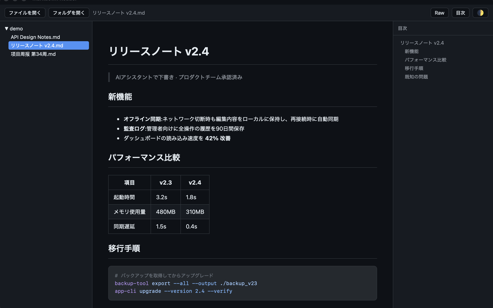
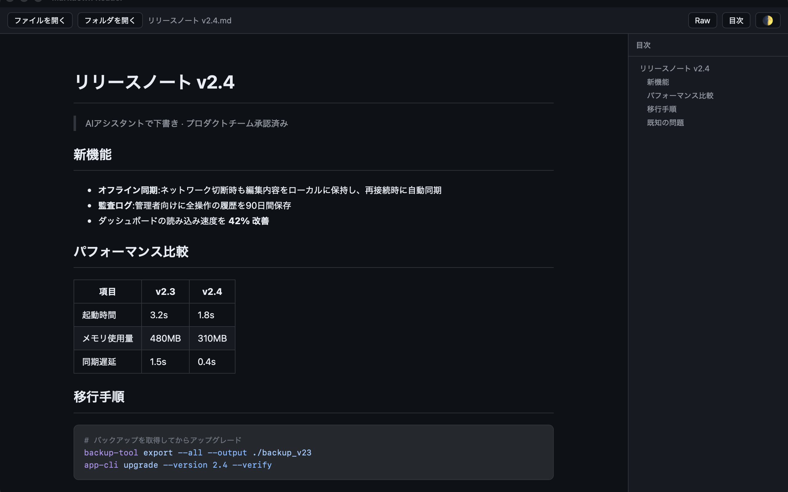
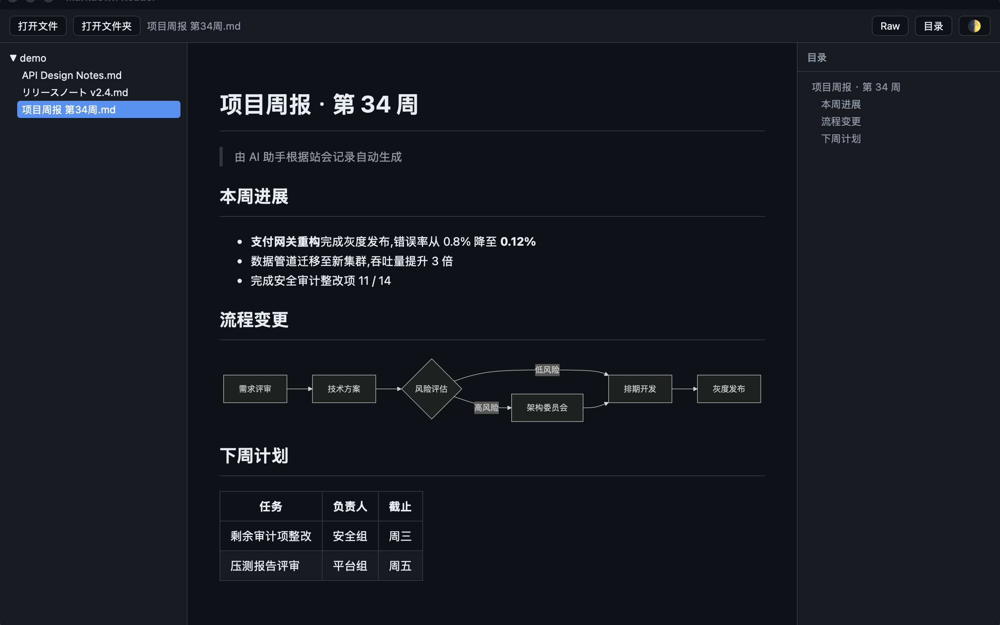
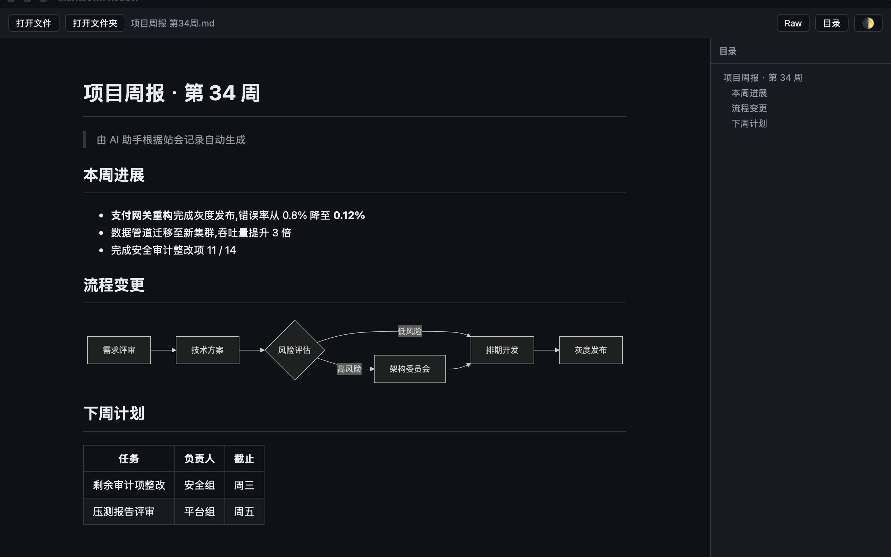

AI Doc Reader
Markdown View · macOS, iPhone & iPad
Universal Purchase · One Pro for Mac, iPhone & iPad
The Missing Reader for AI-Generated Documents
Today's AI tools write in Markdown. AI Doc Reader turns raw .md output into a clean, beautiful document — diagrams, math, code and all.
Mermaid diagrams (with full-screen zoom), KaTeX math formulas, syntax-highlighted code blocks, tables and task lists — all displayed properly, offline.
Link any iCloud, Obsidian, or local folder to browse all Markdown files with instant full-text search and auto-generated table of contents.
One-tap 8 Mermaid diagram templates, KaTeX math helpers, code blocks, table builder, and live Edit / Preview across Mac, iPhone & iPad.
Export cleanly formatted PDFs or high-resolution long PNG images for sharing, plus Git version history side-by-side diff on macOS.
100% native SwiftUI on iOS/iPadOS and lightweight native app on macOS. English, Japanese, and Simplified Chinese with Light, Dark, and Sepia themes.
Reading is free forever with zero ads. Optional Pro (Monthly ¥100 / Annual ¥800 / Lifetime ¥1,500 — Universal across Mac, iPhone & iPad) unlocks editing, folder search, PDF/PNG export, Git diff, and Sepia theme. 100% offline.


AIが生成した文書のためのリーダー
AIツールの出力はMarkdownがほとんど。AI Doc Readerは.mdファイルを図・数式・コードまで美しく表示します。
Mermaid図（全画面拡大対応）、KaTeX数式、シンタックスハイライト付きコード、表、タスクリストを完全オフラインで正確にレンダリング。
iCloud や Obsidian、ローカルフォルダをリンクして高速に全文検索。各文書の目次も自動生成されます。
Mac・iPhone・iPad すべてで Mermaid 8種テンプレート、数式・コード・テーブル挿入、ライブプレビュー編集に対応。
図表・数式入りの文書を高画質 PDF や長い PNG 画像として共有可能。macOS 版では Git 履歴の並列 Diff 比較にも対応。
iOS/iPadOS は純 SwiftUI ネイティブ、macOS も軽量ネイティブ。日英中 3 言語、ライト/ダーク/セピアテーマ対応。
閲覧機能は完全無料・広告なし。Pro（月額 ¥100 / 年額 ¥800 / 買い切り ¥1,500・Mac/iPhone/iPad 共通）で編集・フォルダ検索・PDF/PNG 書き出し・Git 履歴・セピアテーマを解放。完全オフライン。


为 AI 生成的文档而生的阅读器
如今 AI 工具的输出几乎都是 Markdown。AI Doc Reader 把原始 .md 文件渲染成排版精美的文档——图表、公式、代码一个不落。
Mermaid 图表（支持全屏缩放）、KaTeX 数学公式、语法高亮代码块、表格与任务清单，全部离线精准呈现。
关联 iCloud / Obsidian / 本地文件夹，跨文档全文检索直达行号，每篇文档自动生成目录。
Mac / iPhone / iPad 全端支持 8 种 Mermaid 图表模板、KaTeX 公式、多语言代码块与表格快捷插入，实时预览。
一键将 AI 文档导出为高清 PDF 或长图 PNG 分享，macOS 版同时支持 Git 版本历史并排 Diff 对比。
iOS / iPadOS 纯 SwiftUI 原生打造，macOS 轻量原生应用；中/日/英三语界面与浅色、深色及护眼纸色主题。
离线阅读永久免费无广告；Pro（¥100/月、¥800/年 或 ¥1,500 终身买断，Mac/iPhone/iPad 通用）解锁编辑、文件夹搜索、PDF/长图导出、Git 历史与护眼主题。纯本地离线运行。

